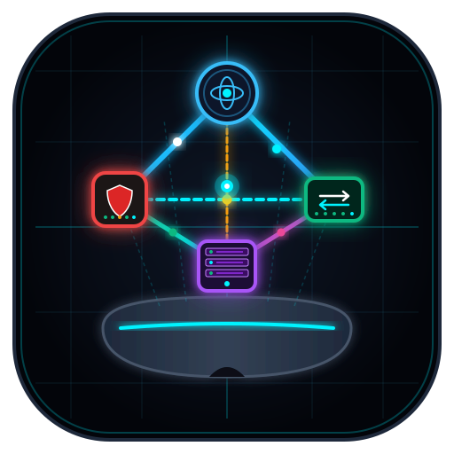

As application data moves down the stack, each layer encapsulates the payload with its specific protocol header (Data → Segment → Packet → Frame → Bits).
Network services directly exposed to applications. Protocols: HTTP/S (80/443), DNS (53), DHCP (67/68), SSH (22), BGP (179).
Data representation, TLS/SSL cryptographic encryption, compression, and character encoding (ASCII, Unicode, JPEG).
Session initiation, checkpointing, and termination between endpoints. Protocols: RPC, NetBIOS, PPTP.
End-to-end communication flow control, multiplexing via source/destination Port numbers (0-65535). TCP (reliable, 3-way handshake) vs UDP (fast, connectionless).
Logical routing, IP addressing (IPv4/IPv6), subnetting, path determination. Protocols: IPv4, IPv6, ICMP, OSPF, EIGRP, ARP. Devices: Routers, Multilayer Switches.
Physical hop-to-hop framing, 48-bit MAC addresses, 802.1Q VLAN tags, Spanning Tree (STP), and CRC error check (FCS). Devices: Ethernet Switches, WAPs, Bridges.
Physical transmission of raw bits over physical media: electrical voltage (Copper Cat6), light pulses (Fiber SMF/MMF), radio frequencies (Wi-Fi 6). Connectors: RJ-45, LC, SFP+.
Understand connection-oriented reliable transfer vs connectionless high-speed datagrams.
[SYN] Seq=0 Win=65535 MSS=1460 to initiate synchronization.[SYN, ACK] Seq=0 Ack=1 Win=65535.[ACK] Seq=1 Ack=1. Connection ESTABLISHED! Data can now flow.| Feature / Parameter | TCP (Transmission Control Protocol) | UDP (User Datagram Protocol) |
|---|---|---|
| Connection Type | Connection-oriented (Requires 3-way handshake) | Connectionless (Fire-and-forget, no handshake) |
| Reliability | Guaranteed delivery with ACKs & retransmission | Best-effort (No retransmission; packet loss possible) |
| Header Size | 20 bytes minimum (up to 60 bytes with options) | 8 bytes fixed (Source Port, Dst Port, Length, Checksum) |
| Ordering & Sequence | Packets sequenced and reassembled in exact order | No sequence numbers; packets may arrive out of order |
| Flow & Congestion Control | Sliding Window mechanism & TCP Congestion Avoidance | None (Streams at maximum application rate) |
| Typical Use Cases | Web (HTTP/HTTPS), Email (SMTP/IMAP), File (FTP/SSH), SQL | VoIP, Video Streaming, Gaming, DNS queries, DHCP, SNMP |
Reference specs for copper twisted pair, optical fiber, direct-attach twinax, and EIA/TIA pinouts.
Max Speed: 10 Gbps (55m) / 1 Gbps (100m)
Max Distance: 100 meters (328 ft)
Connector: RJ-45 (8P8C)
Use: End-user PCs, VoIP phones, Wi-Fi 6 APs, office switches
Max Speed: 100 Gbps - 400 Gbps
Max Distance: 10 km - 40 km (up to 80 km ZR)
Wavelength: 1310 nm / 1550 nm Laser
Use: Telco WAN backbones, campus interconnects
Max Speed: 25 Gbps / 40 Gbps / 100 Gbps
Max Distance: 400 meters (OM4)
Wavelength: 850 nm VCSEL LED (50/125µm core)
Use: Data center spine-leaf, SAN storage fabric
Max Speed: 10 Gbps / 25 Gbps / 100 Gbps
Max Distance: 1 - 5 meters (Ultra-low latency)
Connector: Integrated SFP28 / QSFP28
Use: Top-of-Rack switch to blade server racks
Straight-through cable uses same standard on both ends. Crossover cable uses 568A on one end and 568B on the other.
Understand how modern cloud data centers decouple software from physical server hardware.
Installs directly on the bare-metal server chassis with zero host OS overhead. Direct access to CPU, RAM, and PCIe devices.
Examples: VMware ESXi, KVM, Proxmox VE, Microsoft Hyper-V Server.
Use: Production enterprise data centers, AWS EC2 Nitro, high-density clouds.
Runs as software inside a traditional desktop operating system (Windows/macOS/Linux). Higher latency and CPU overhead.
Examples: Oracle VirtualBox, VMware Workstation / Fusion, Parallels.
Use: Developer workstations, student labs, software testing.
| Virtualization Concept | Virtual Machines (VMs) | Containers (Docker / Podman) |
|---|---|---|
| Architecture | Hardware virtualization (Virtual CPU, Virtual RAM, BIOS) | OS kernel namespace and cgroup isolation |
| Operating System | Runs full Guest OS with own kernel per VM (Gigabytes) | Shares the host OS kernel; micro-image footprint (Megabytes) |
| Startup Time | Minutes (Cold boots full OS kernel and services) | Milliseconds (Instantly launches isolated process) |
| Networking | Virtual Switch (vSwitch), port-groups, virtual MAC & IP | Bridge network, veth virtual ethernet pairs, Overlay CNI |
Protecting data in transit across public untrusted WANs using confidentiality, integrity, and authentication.
Negotiates security parameters to establish an authenticated, encrypted management channel between VPN peers.
Negotiates the actual data tunnel parameters to protect payload traffic.
Test your networking skills with rapid-fire questions covering OSI, TCP/UDP, Cabling, and Virtualization.
Establish the external WAN border and deploy next-gen threat defense.
Select hardware role, department subnet, and specify custom IP address.
Select endpoints and choose transmission media.
| Link ID | Source Device | Destination Device | Media Type | Action |
|---|
Simulate real packets across the network and watch live 3D packet traces.
Exports the complete architectural schematic map, 3D WebGL layout snapshot, diagnostic test audit, Bill of Materials (BOM) inventory table, and cabling schedule.
| No. | Time | Source IP | Destination IP | Protocol | Length | Packet Information / Summary |
|---|